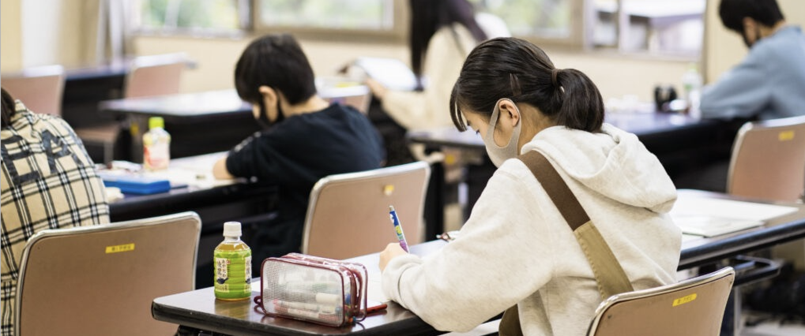
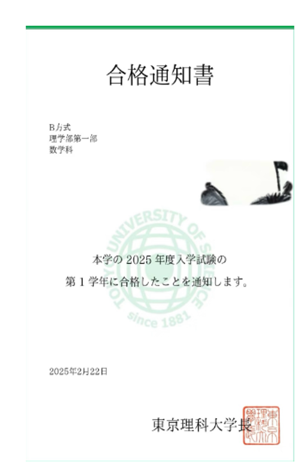
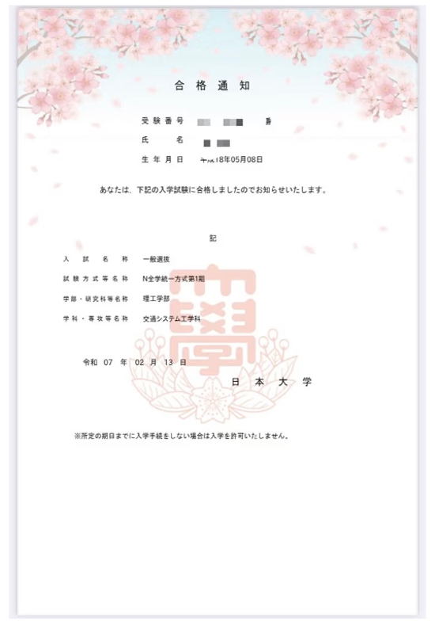

东京科学大学（理工学系）
2 名参加对策课程2 名笔试合格2 名最终合格
数学・物理・化学｜原创模拟题｜模拟面试
查看校内考对策 →先确认报考方式、目标校与当前成绩，再选择对应课程。


实技训练、作品制作、志望理由与面试准备。


按目标校要求组合数学、理科、文科与语言科目。


按目标校、报考科目和当前进度安排个别辅导。


按募集要项、笔试科目、历年题型与面试要求准备。
具体支持范围按课程、目标校和出愿时间确认。
合格校次按录取结果统计，不等同于独立学生人数。
数学・物理・化学｜原创模拟题｜模拟面试
查看校内考对策 →



实际担当以当期排课为准。
应聘时请提供简历、希望负责的科目或业务方向，以及相关考试、授课或项目经历。
联系应聘 →请提供目标校、当前成绩和预计考试或入学时间。